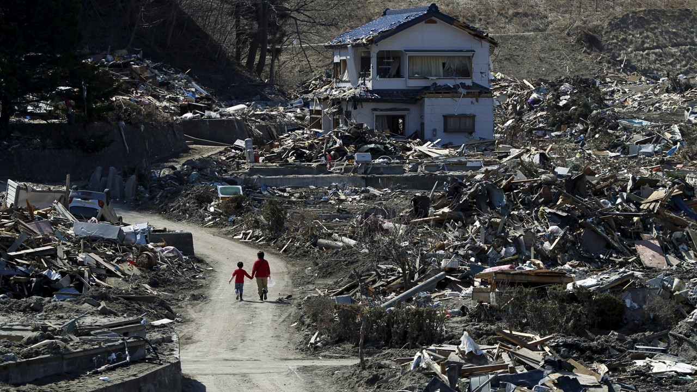
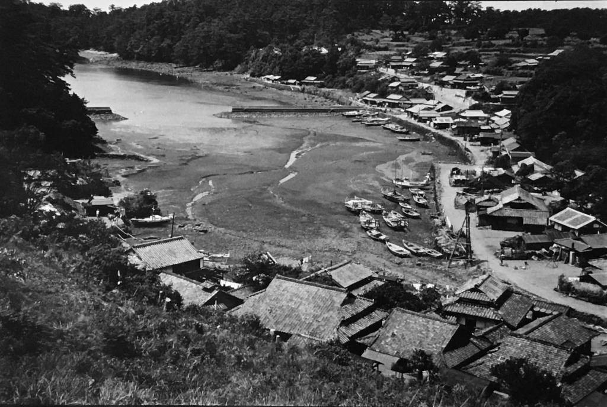
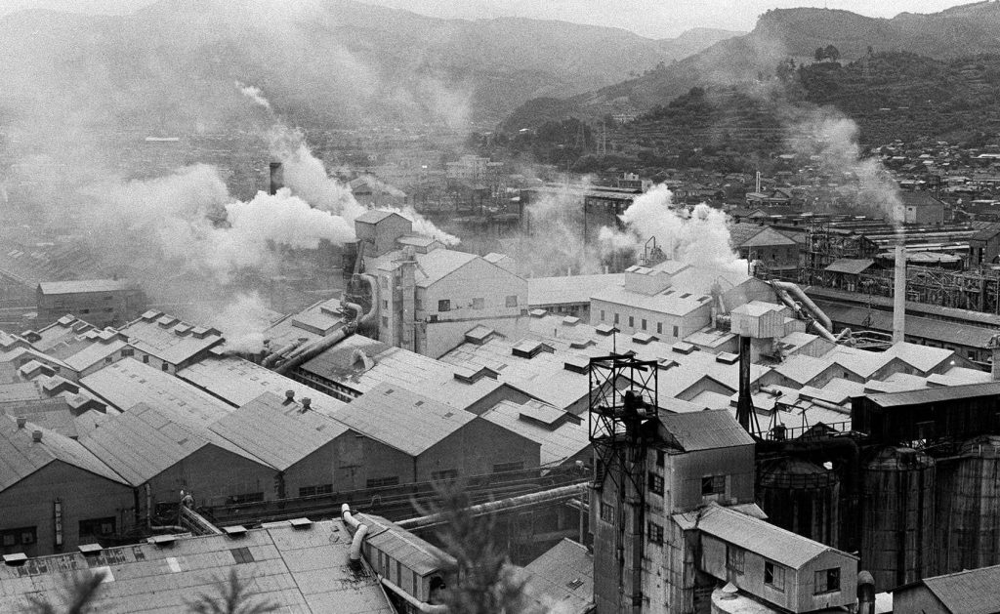
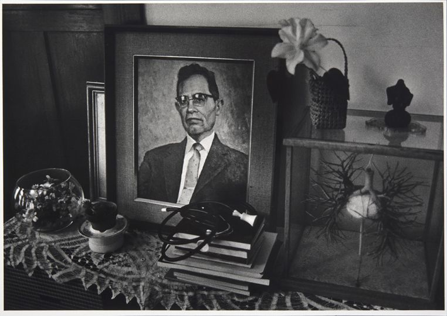
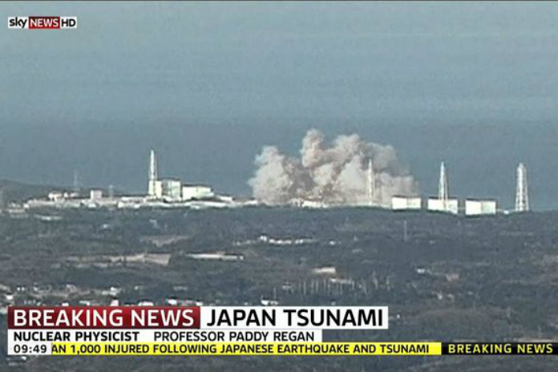
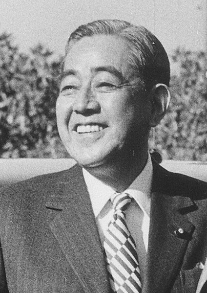
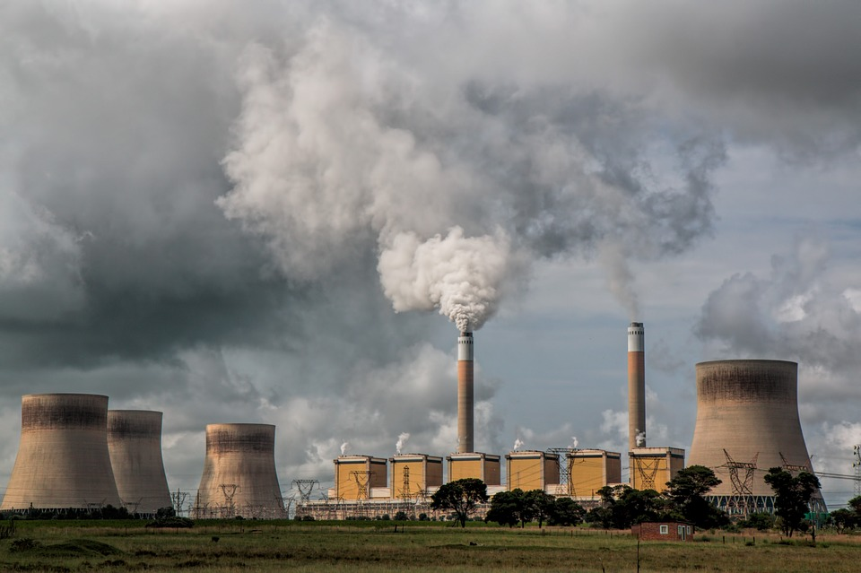

Les catastrophes environnementales majeures du japon
Des catastrophe qui impacteront le pays pendant des centenaines d'années

Photographie de Fukushima en 2018
Nous allons parler aujourd’hui des 2 plus grandes catastrophes environnementales japonaises causées par les hommes. Toutes 2 furent aussi dramatiques pour les hommes que pour la faune et la flore.
Quelles sont leurs raisons ? leurs impacts? et quelle solution trouvera l’état pour limiter ces drames et empêcher leurs récidives? nous allons tout vous dire dans cette article
Empoisonnement de la baie de Minamata

Photographie de la baie de Minamata
La catastrophe de la baie de Minamata, étant à l'origine de la maladie du même nom, fut causé autrefois a la suite de rejet de métaux lourd de la part d’une usine pétrochimique qui faisait face à cette baie, ayant par cette pollution excessive, intoxiqué au mercure faune, flore, mais surtout population, mais ces effets ne furent pas instantané.

Photographie historique des usine de Minamata
Car en réalité, l’entreprise déversait déjà tous ces déchets dans sa baie depuis 1932, mais ce fut seulement en 1949 que les premières description de la maladie furent remontées [Des problèmes neurologiques graves].
De 1949 à 1969, notamment dût à la consommation de poissons contaminés, il fut déjà décompté 900 décès et 2200 malades officiels sans compter les envirrons 10 000 personnes qui furent soudoyées pour arréter leurs poursuite judiciaire face à cet empoisonnement de masse.
Au fil des années, de nouveaux symptômes semblent apparaître sur les nouveaux nés, malgré la présence ou non de symptômes neurologique chez les mére qui donnent naissance durant ce drame, elle finirent malgré tout par avoir des enfants avec des malformations congénitales, handicapés voir même des enfants mourant dès leur naissance.

Photographie du docteur Hajime Hosokawa
En 1959, le docteur Hajime Hosokawa se mit a enquêter sur le phénomène des chats Minamatien qui ce mettait parfois à perdre les pédales et à sauter en pleine mer pour s’y noyer. Et très vite, suite à ces expériences, il acquis une certitudes, ces chats étaient rendu fou par la pollution au mercure.
Pas à pas, ce scientifique fit le lien avec les problèmes de santé des locaux, mais malheureusement, la compagnie qui causa la catastrophe réussit à discréditer les dirigeants de l’homme, et elle continuait à polluer jusqu'en 1966 où elle totalisait au total presque 400 tonnes de mercure déversé.
Et l’état japonais se mit en marche pour proposer d’indemniser les victimes qu'à partir de 1996. En 2009, 53 ans après le début officiel de la maladie, 13 000 malades furent enfin reconnus par l'État. mais 25000 personnes sont toujours en attente de reconnaissance pour enfin se faire indemniser leur suivi médical. La justice leur donnera-t-elle enfin la rétribution qu’ils méritent ? Espérons le mais il est vrai qu’au fil des années, cette possibilité semble de plus en plus disparate.
L'accident nucléaire de Fukushima

Extrait d'un reportage de sky NEWS HD sur l'accident nucléaire de Fukushima
La catastrophe de Fukushima, à la fois bien plus récente et bien plus connue mondialement, fut causée par le séisme du 11 mars 2011 qui causa à son tour, créa un tsunami qui en combinaison avec les précédents tremblements détruisit le système de refroidissement des réacteurs.
Et ce sont tous ces facteurs qui amènent finalement 3 réacteurs à entrer en état de fusion total, les faisant rejeter d'importants rejets radioactifs. La contamination dût à cet accident fut considéré comme la plus grande pollution radioactive marine au monde avec un impact sur environ 30Km sans compter le voyage des particules.

Extrait d'un reportage du LE22h de TF1 sur l'avenir de Fukushima après la catastrophe
Pour plus d’informations.
Si vous voulez en savoir plus, allez voir ces reportages ici :
La politique environnemental japonaise
Shōwa Tennō, le 124éme empereur du japon
Shigeru Yoshida, premier ministre japonais de 1948 à 1954
Le japon commença sa politique environnementale en 1950 avec la rédaction de livres blanc et la reconnaissance en 1956 de la maladie de Minamata, mais c’est seulement en 1967 que les premières lois sur le contrôle de la pollution passèrent.

Eisaku Satō, premier ministre japonais de 1964 à 1974
En 1970, le japon créera son siège du contrôle de la pollution et c’est à ce moment que le japon se mit à rédiger de très nombreuses lois environnementale pour lutter contre ces phénomènes inhumain
Logo de la conférence mondiale sur la biodiversité de nagoya
En 2010 le japon sera même l'hôte de la conférence mondiale sur la biodiversité de nagoya et il ira jusqu'à réitérer ces engagement lors de la COP 21 de 2015
Mais en 2019 en marge de la COP 25, plusieurs association écologique ont dénoncé le fait que malgré les soit disante considérations des autorités japonaise pour l’écologie, le charbon était devenu entre temps le plus grand financeur des usines à charbon (une énergie extrêmement polluante), prouvant leurs très faibles ambitions à ce niveau.

Photographie d'une centrale à charbon
Alors pour conclure, le japon a eu une très forte évolution au point de vue des catastrophes environnementale, principalement passif dans les année 50 et cherchant à camoufler les drames pour cacher leurs propre inaction à ce sujet, ils chercherons ensuite à faire bouger les choses a partir des années 70 et vers les années 2011 ou le second drame arrivera, le pays communiquera beaucoup plus et surtout, il feront tout leur possible pour protéger leurs habitant au maximum du contrecoup de cette tragédie.
Et aujourd’hui, maintenant que le lieu est majoritairement assainit, il retente malgré tout de récupérer leurs terres malgré l’inquiétude de leur peuple. malheureusement au fil des années, l'intérêt des politiques pour l’écologie semble de plus en plus se perdre.
Mais d’un point de vue de la gestion des catastrophes, ils ne semblent pas avoir perdu de leur efficacité depuis Fukushima.